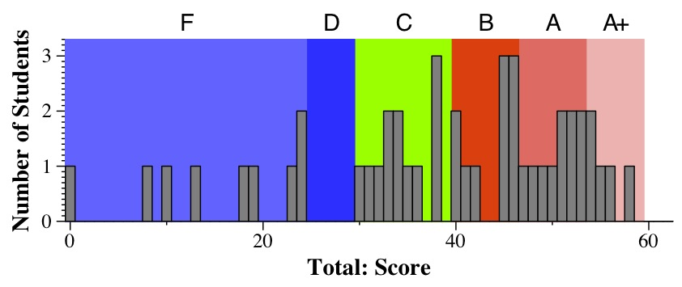
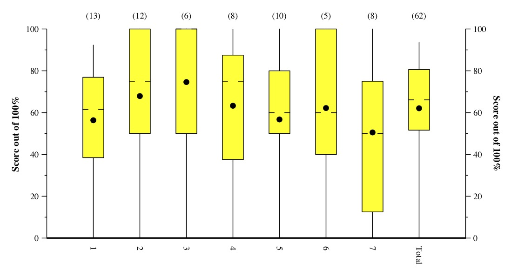

CS140 Midterm Exam #2: April 5, 2012
Scores
No real comments -- this was a straightforward exam.
- 54 - 60: A+
- 47 - 54: A
- 40 - 47: B
- 30 - 40: C
- 25 - 30: D
- Below 25: F

Tukey Plots:
Lines go to min & max. The box is from the first quartile to the third quartile.
The hash marks denote the median. The dot denotes the mean.
